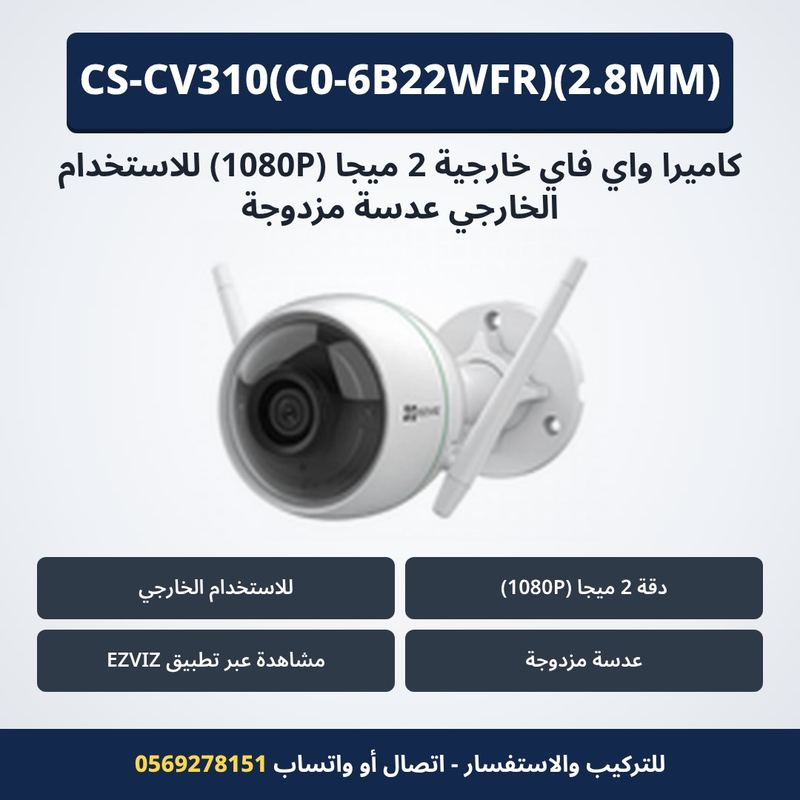

كاميرات مراقبة وأنظمة أمن
0569278151
كل المنتجات
← كاميرات إيزفيز
إيزفيز كاميرا واي فاي خارجية 2 ميجا (1080P) للاستخدام الخارجي عدسة مزدوجة
الموديل:
CS-CV310(C0-6B22WFR)(2.8MM)

دقة 2 ميجابكسل (1080P)
العدسة: مزدوجة
الاستخدام: الخارجي
المواصفات
الماركة
إيزفيز
الموديل
CS-CV310(C0-6B22WFR)(2.8MM)
نوع المنتج
كاميرا واي فاي خارجية
الدقة
2 ميجابكسل (1080P)
العدسة
مزدوجة
الاستخدام
الخارجي
واتساب 0569278151
اتصال